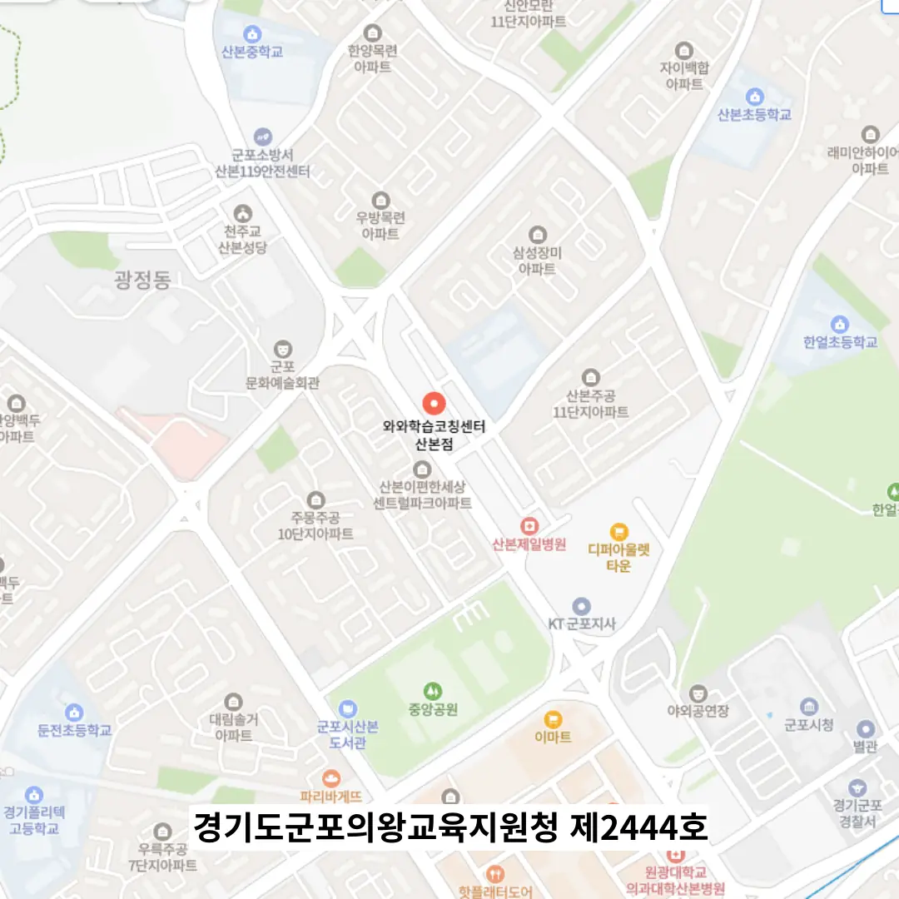

학부모님께서는 아이의 성장 발판을 마련하려는 마음으로 교육기관 선택에 신중을 기해요, 왜냐하면 초기 환경이 장기적인 학습 태도에 큰 영향을 주거든요. 주변 환경과 교통 편의를 고려하면서도 강사의 전문성을 직접 만나 확인하는 과정이 필요해요, 이는 실제 수업 만족도를 좌우하니까요. 수업 방식이 개별 맞춤인지, 그룹 학습이 효과적인지 비교해 보는 것이 현명한 선택을 도와줘요, 각각의 장단점을 이해하는 것이 중요하거든요. 수강료 구조가 투명하고 추가 비용이 발생하지 않는지 꼼꼼히 검토해 보는 것이 가계 부담을 줄이는 핵심 포인트에요. 학습 목표와 피드백 주기가 명확히 설정돼 있는지 체크해 보면 학습 진행 상황을 지속적으로 파악할 수 있어요. 주기적인 진도 점검과 학부모 상담이 활발히 이루어지는지 확인해 보면 교육 파트너와의 신뢰가 깊어지거든요.
학부모님은 초등 저학년이 놀이와 학습을 자연스럽게 연결하는 환경을 원해요. 초등 고학년은 자기주도 문제 해결 능력이 급격히 성장하는 시기라 체계적인 피드백이 필요해요. 중학생은 시험 대비와 핵심 정리 시간이 중요하니 주 1회 집중 수업이 효과적이에요. 고등학생은 심화 학습과 입시 전략이 핵심이기 때문에 맞춤형 멘토링이 도움이 돼요. 전체 학년은 산본 고등학원 내 학습 분위기가 협력적이고 도전적인 문화가 조성돼야 지속적인 동기 부여가 가능해요.
와와학습코칭센터는 단순히 지식을 전달하는 것을 넘어, 아이가 학습을 주도적으로 이끌어가는 힘을 기르는 데 중점을 둬요. 학생의 학습 주도성을 꼼꼼히 관찰한 뒤에 맞춤형 피드백을 제공하기 때문에, 자신의 문제점을 정확히 알고 고칠 수 있거든요. 기초 개념부터 탄탄히 다져 실전에 적용할 수 있도록 단계별로 수업이 구성되어 있어요. 수강료는 고급 과정이 십육만 원, 초급 과정이 구만 원으로 책정되어 있어 부담 없이 시작할 수 있어요. 특히 공부 리듬을 잡아주는 주간 코칭과 서술형 답안 작성 전 아이디어를 정리하는 생각정리표 활용은 이곳만의 특별한 장점이에요. 아이가 이 산본 고등학원을 선택하면 스스로 계획하고 실행하는 능력이 자연스럽게 길러지면서 성취감을 느끼게 될 거예요.
| 학원명 | 와와학습코칭학원 |
| 수강료 | 고급2 160,000원 | 초급 90,000원 |
CURRICULUM
첫 단계에서는 시험 전 핵심 개념을 정리하고 주요 포인트를 시각화해요. 다음 단계에서는 개별 질의응답 시간을 마련해 궁금한 점을 직접 해소하도록 돕어요. 그 후에는 중간고사 직전 주말에 집중 특강을 두 차례 진행해 핵심 내용을 반복 학습해요. 이후에는 실전 모의고사를 치르고 오답 분석표를 통해 약점을 정확히 파악해요. 마지막으로 복습 스케줄을 체계화해 장기 기억을 강화하는 방식을 적용해요. 각 수업은 작은 목표 설정 후 즉각적인 피드백을 제공해 학습 효율을 높여요. 또한 교재와 연계된 실제 사례를 제시해 이론과 적용을 연결해요.
학생들은 산본 고등학원 선택 단계에서 목표가 명확하지 않아 성적 예측에 불안감을 느끼는 경우가 많아요. 등록 후에는 수업 내용과 기대 효과 사이에 괴리감이 생겨 포기 위험이 커지곤 해요. 학습 관리 단계에서는 자기 주도 학습 습관이 부족해 꾸준히 유지하기 어려운 상황이 빈번히 나타나요. 이러한 오류를 최소화하려면 구체적인 목표 설정과 지속적인 피드백이 필요해요
산본 고등학원에서는 모든 교사가 학생을 관찰하고 피드백을 제공하는 문화를 조성해요. 단원 핵심 요약과 문제 난이도 조절을 동시에 진행해 학습 부담을 최소화해요. 정서적 안정과 수업 참여도를 높이기 위해 무형식적인 대화 시간을 마련하고, 수업 없는 날에는 자율학습 시간표를 제공해요. 이러한 전략은 학생 스스로 학습 계획을 세우고 실행하도록 도와요, 지속적인 동기 부여를 가능하게 해요.
우리 아이는 고등학교 1학년으로, 복습은 철저히 하지만 장문 문제에서는 쉽게 지치는 경향이 있어요. 부모님은 피로도 조절이 어려운 아이에게 적절한 휴식과 학습 루틴을 제안하고, 선생님은 짧은 시간 안에 핵심을 짚어주는 수업을 제공해요. 학생은 효율적인 시간 관리와 목표 설정으로 학습 효율을 높일 수 있어요. 산본에서는 이런 특성을 가진 학생에게 맞춤형 코칭이 효과적이라고 평가해요.
첫 번째 학부모는 개별 상황을 반영한 지도 방식이 맞춤형이라고 느껴 만족감을 표했어요. 두 번째 학부모는 처음엔 긴장된 태도가 있었지만 점차 확신으로 바뀌는 과정을 보며 감동을 받았어요. 세 번째 학부모는 상담 중 교사가 학생과 학부모 모두에게 눈을 맞추며 소통하는 태도가 인상적이라고 말씀했어요. 네 번째 학부모는 오답을 유형별로 재구성해 반복 실수를 크게 줄였다고 전했어요. 다섯 번째 학부모는 자습 공간이 집중하기 좋은 구조로 설계돼 편리하다고 강조했어요. 이러한 다양한 경험은 산본 고등학원의 교육 품질과 학생 성장에 대한 긍정적인 영향을 보여줘요